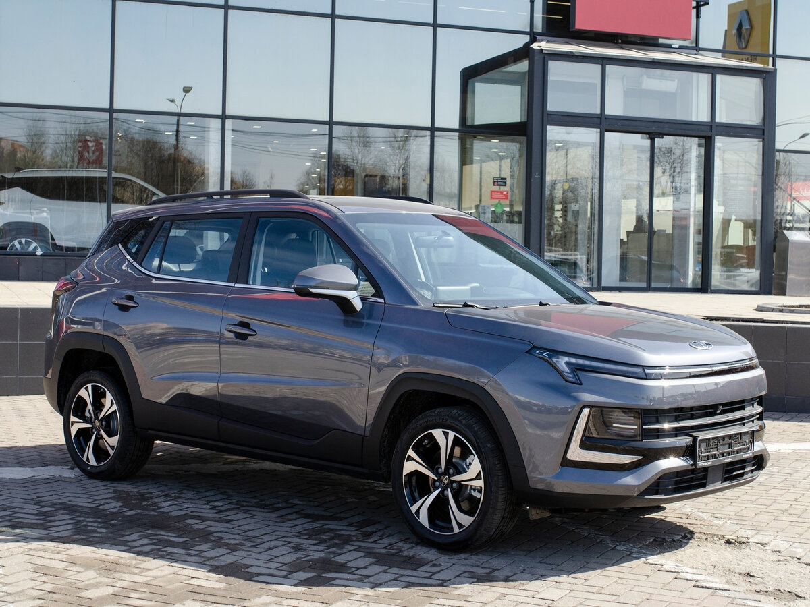
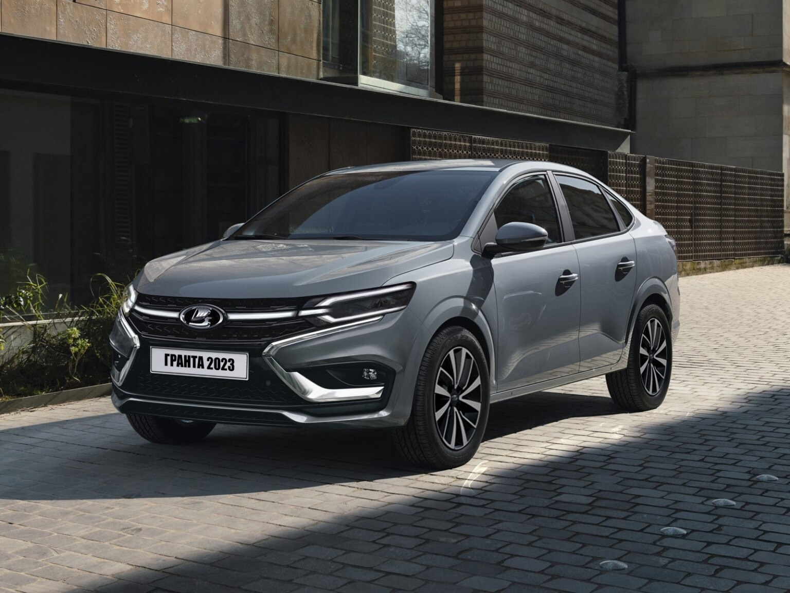

Москвич 3
Турбированный двигатель
1,5 л
Мощность
150 л.с.
Крутящий момент
210 Нм
Коробки передач
МКПП / CVT
Это Артём. Он очень занятой человек. Он хочет купить новую машину. И он выбирает между Ладой Грантой и Москвичём

 Лада Гранта 2023
КУЗОВ
Седан
МЕСТА
5
ПРИВОД
Передний
ТОПЛИВО
Бензин
ОБЪЁМ ДВИГАТЕЛЯ
1.6 л
РАСХОД ТОПЛИВА
от 5,2л / 100км
КОРОБКА
MT / AT
МАКС. СКОРОСТЬ
до 184 км/ч
Создано Артёмом 2023